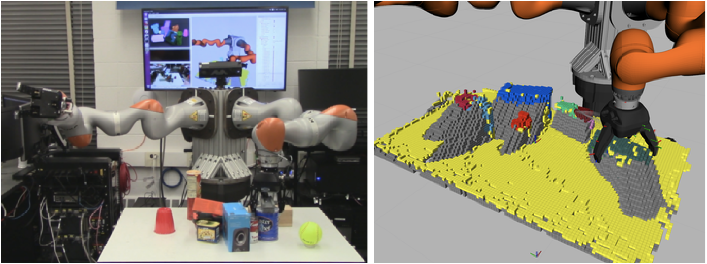
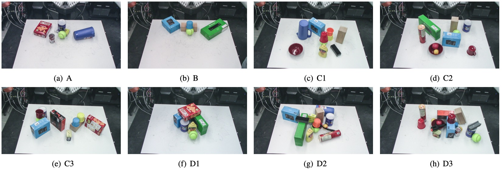

University of Michigan, Ann Arbor
In ISRR 2019

Left: Our robot sliding an object in a cluttered scene to reveal the target (the yellow ball). Right: The robot's representation of the world, including shape-completed objects and memory of previously seen shapes and free space. Yellow voxels represent the table or unclassified points, gray represents occluded “shadows”, and other colors represent shape-completed segments.
AbstractObject search -- the problem of finding a target object in a cluttered scene -- is essential to solve for many robotics applications in warehouse and household environments. However, cluttered environments entail that objects often occlude one another, making it difficult to segment objects and infer their shapes and properties. Instead of relying on the availability of CAD or other explicit models of scene objects, we augment a manipulation planner for cluttered environments with a state-of-the-art deep neural network for shape completion as well as a volumetric memory system, allowing the robot to reason about what may be contained in occluded areas. We test the system in a variety of tabletop manipulation scenes composed of household items, highlighting its applicability to realistic domains. Our results suggest that incorporating both components into a manipulation planning framework significantly reduces the number of actions needed to find a hidden object in dense clutter.Video
Publication
Experimental Results
|